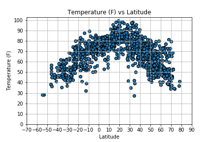

Summary: Latitude vs. X

The purpose of the project was to analyze how whether changes as you get closer to the equator. To accomplish this analysis, data was requested from the OpenWeatherMap API 06/26/2019 between 5:30 PM PST – 5:52 PM on over 1000 cities.
After assembling the data dataset, we used Matplotlib to plot various aspects of the weather vs. latitude. Factors we looked at included temperature, cloudiness, wind_speed, and humidity. This site provides the source data and visualizations created as part of the analysis, as well as the explainations and descriptions of any trends and correlations witnessed.
Visualizations